At a glance
An AI LinkedIn optimizer. It turns an uploaded resume into rewritten, role-targeted profile sections. It adds ATS-style scoring, keyword gap analysis and AI profile and banner visuals, and is monetised with a ₹99 unlock.
Overview
LinkedUp helps job seekers turn the resume they already have into a strong LinkedIn profile. You upload a PDF or DOCX once and set your target role, industry, seniority and tone. LinkedUp then rewrites each profile section (headline, About, experience, skills, certifications, projects), scores the result, shows which keywords are missing, and can generate a profile photo and banner. It is live, with a freemium flow and a ₹99 "generate all" unlock through Razorpay.
The problem
Most job seekers have a decent resume but a weak LinkedIn profile. Rewriting each section so it reads well to recruiters, uses the right search keywords for the target role, and matches the right seniority is slow and unclear. Doing it by hand also means guessing which keywords matter.
The solution
- Resume in, structured profile out. The resume is parsed and turned into a structured JSON profile by an LLM.
- Section-by-section generation. Each LinkedIn section is rewritten with role-, seniority- and tone-aware prompts, and any single section can be regenerated without redoing the rest.
- Scoring you can trust. A deterministic ATS-style scorer is merged with LLM keyword scoring to show matched and missing keywords.
- Visuals in the same flow. AI profile photo enhancement and a banner generated at LinkedIn's dimensions.
- Simple, affordable pricing. A free preview, then a single ₹99 unlock per workspace.
Key features
Intake
- PDF and DOCX upload, parsed to text and then structured into a JSON profile by AI.
- Duplicate resumes are detected by hash, and files are stored per workspace.
- Target role (required), plus industry, seniority and tone presets.
AI section generation
- Headline, About/summary, experience (rewritten per role), skills, certifications (with issuer recovery and normalisation), projects, banner tagline and positioning advice.
- Per-section regeneration, or the full pipeline in one run.
Analysis
- An ATS score panel that merges a deterministic scorer with LLM keyword scoring.
- Keyword insights (matched vs missing) and an optimisation quality dashboard.
Visuals
- AI profile photo generation and enhancement.
- AI cover/banner generation, resized and cropped to LinkedIn's dimensions.
Account, payments and UX
- Sign-up and sign-in with Clerk, auto sign-out after inactivity, and a dashboard of saved workspaces.
- Razorpay checkout for the ₹99 unlock, with payment verification, status polling and paid state saved to the account.
- Mobile-responsive UI with toasts, loading states and profile tabs.
- SEO groundwork: sitemap, robots, manifest, Open Graph and Twitter images, and JSON-LD structured data.
How it works
A Next.js App Router application handles the UI, authentication and AI routes. A Cloudflare Worker with D1 (SQLite) and R2 stores workspaces, payment state and resume files. Structuring and generation run on Amazon Nova models through AWS Bedrock: a lighter model structures the resume and a smaller one handles per-section tasks.

Tech stack
| Layer | Technologies |
|---|---|
| Frontend | Next.js 15 (App Router), React 19, TypeScript 5, Tailwind CSS 4 |
| Auth | Clerk |
| AI / LLM | Amazon Nova (Lite + Micro) via AWS Bedrock (OpenAI-compatible client); a custom prompt library and prompt engine |
| Images | GeminiGen API, Hugging Face Inference |
| Parsing | pdf-parse (PDF), mammoth (DOCX) |
| Backend | Cloudflare Worker (Wrangler), D1 (SQLite), R2 object storage |
| Payments | Razorpay; Upstash Redis for unlock records |
| SEO | Sitemap, robots, manifest, OG/Twitter images, JSON-LD |
| Tooling and tests | ESLint 9, Vitest (worker) |
Engineering highlights
- Hybrid scoring. A deterministic ATS scorer is combined with LLM keyword analysis. The result is more stable than a pure-LLM score and still aware of context.
- Prompt engine, not ad-hoc prompts. A central prompt library and engine produce role-, seniority- and tone-aware prompts for every section, which makes outputs consistent and easy to tune.
- Granular regeneration. Each section is independent, so users can iterate on one part without spending tokens on the whole profile.
- Cost-aware model routing. Resume structuring uses a stronger model, while the high-volume section tasks use a smaller, cheaper one.
- Edge backend. A Cloudflare Worker with D1 and R2 handles workspaces, resume storage and paid state close to users.
- Resume deduplication. Hash-based dedupe avoids reprocessing the same resume.
- Certification normalisation. Recovers missing issuer names and normalises certification data that parses messily from resumes.
- End-to-end monetisation. Order creation, checkout, payment verification, status polling and a stored paid state tie the business model to the product flow.
- SEO-ready from day one. Structured data and social cards help the landing page get discovered.
Challenges & what I learned
- Messy resumes. Challenge: PDFs and DOCX files vary widely, and certifications and dates often parse badly. Approach: an LLM structuring step into a strict JSON profile, plus targeted recovery for certifications. Lesson: a clean intermediate representation makes every downstream step simpler.
- Scores users believe. Challenge: pure-LLM scores jump around between runs. Approach: merge a deterministic scorer with LLM keyword signals. Lesson: use deterministic methods for anything users compare over time.
- Controlling AI cost. Challenge: regenerating a whole profile for every tweak is wasteful. Approach: section-level generation, smaller models for high-volume tasks, and resume-hash dedupe. Lesson: product design choices are also cost controls.
- Pricing for India. Challenge: global tools charge monthly USD subscriptions. Approach: a single low-cost INR unlock through Razorpay. Lesson: local payment rails and price points matter as much as features.
Status & what's next
- Live, with the full flow working end to end: upload → context → generate → score → pay to unlock.
- Current engineering focus: modularising the large optimisation page, broader automated tests (unit, API and end-to-end), shared persistence for session results, and observability.
- Planned product features:
- job-description matching (tailor the profile to a pasted job description);
- A/B variants for headlines;
- LinkedIn post and outreach message generators;
- PDF/DOCX export;
- multi-language output, including Hindi.
- Planned growth: tiered plans, international payments, referrals and shareable score cards.